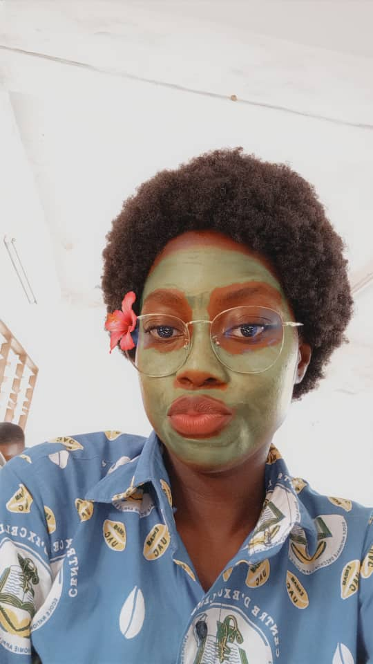

Nom : KPEDEHOUNSI
Prénoms : Vanessa Mahouley Lainoria
Âge : 19 ans

Voici Norie, alias Vanessa (ou l’inverse ?), presque 19 ans et déjà pleine de style !
Fan de basket, elle dribble entre ses séries Netflix et ses lignes de code. Étudiante en licence pro 1 d’informatique de gestion, elle sait dompter les bugs comme elle dominerait un terrain : avec grâce, intelligence, et un soupçon de sarcasme bien placé.
Quand elle ne regarde pas un film (qu’elle a probablement déjà vu trois fois), elle pense à son prochain projet, son futur métier, ou... à ce qu’elle va manger.
Norie, c’est le genre de fille qui peut te corriger une erreur dans ton programme et te recommander une série qui va te faire pleurer, rire et refaire ta vie.
Bref, Norie, c’est une geek avec du flow, une étudiante qui gère, et une fille qu’on n’oublie pas